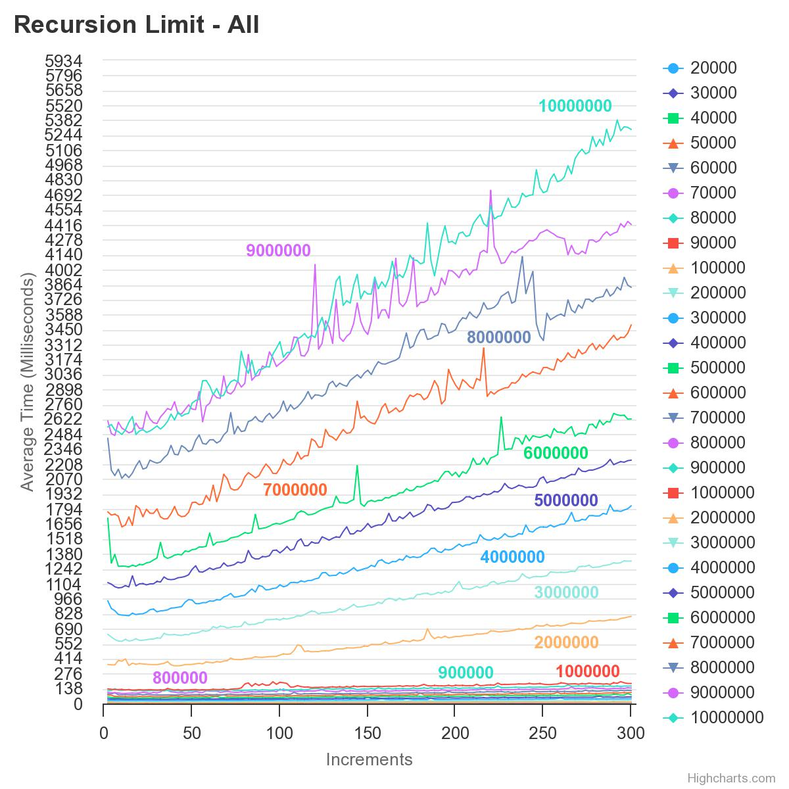

From each iteration of the chart, and the combination of all the tests we can see that as the array size gets larger, the average time it takes to completely sort also increases
While it is harder to see on the All chart, we can see really clearly on the hundred thousands chart how the chart expands over each increment.
One oberservation can be made that seems almost random is how sometimes an increment can shoot up in time, then lower back down to a normal time. This can really be seen on the 800,000 chart where it starts about where 700,000 ends, then shoots up around increment 50, 100, and again at around 250.
When looking at all the charts we can see some flat ranges, from 1,000,000 and 100,000, though for the smallest amount (20,000) it fluctuates more from 2-5 milliseconds

Recursion Limit All
Recursion Limit Subset of Ten Thousands
Recursion Limit Subset of Hundred Thousands
Recursion Limit Subset of Millions
Interesting Find
Some classmates were discussing the values that should be in the array, and some were saying that they were using values from 1-100. I went and ran my tests again with values 1-100 instead of Integer.MAX_VALUE and the results where interesting
with these results we can see that the average time is much lower, almost 4000 milliseconds in total lower
we can also see how each line starts at a higher number and goes down to a lower number, compared to previously where we were going lower to higher